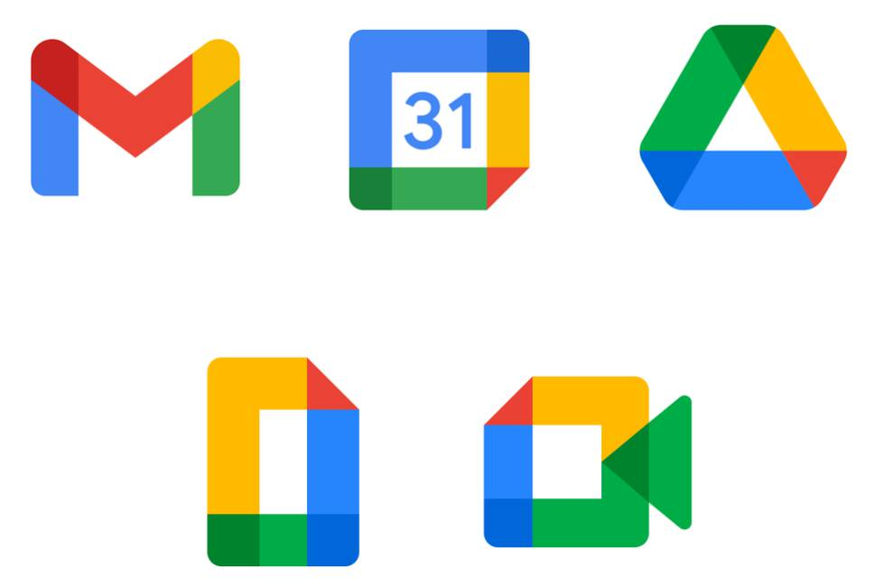

EmCa Producciones espera que tu día a día sea mejor con música, por eso también te brindamos es posibilidad con EmCa Radio Estudio online. Las 24hs de música para vos. ¡Escuchanos!
Por segundo año consecutivo, Sudamérica tuvo el privilegio de poder observar en forma total este fenómeno astronómico que no volverá a ocurrir en la región hasta 2048. Quienes estuvieron en gran parte de la Patagonia de Argentina y Chile tuvieron una platea preferencial para observarlo. En la franja donde se produjo la totalidad del eclipse, que tuvo un ancho de aproximadamente 90 kilómetros, el día se volvió noche. Así, durante unos pocos minutos, la Luna cubrió por completo al Sol. La duración máxima de la totalidad fue de 2 minutos y 10 segundos, pero el tiempo total de las fases del espectáculo espacial es de unas tres horas.
Este lunes al mediodía la Argentina tendrá una ubicación de privilegio para asistir a uno de los espectáculos astronómicos más fascinantes: un eclipse de Sol total. Aunque el foco principal estará en la región patagónica, podrá ser observado parcialmente desde distintos puntos geográficos. En el AMBA tendrá una cobertura solar del 73,69%. Para que este suceso se repita localmente, habrá que esperar 28 años.

En su totalidad, el eclipse será observable desde la Patagonia y alcanzará su punto máximo en la provincia de Río Negro. La mejor ubicación será al noroeste de la localidad de Sierra Colorada, donde la duración del fenómeno -estimada en 2 minutos y 10 segundos- será plena y el Sol estará a la mayor altura posible de ese día sobre el horizonte.
Al seguir la ruta del eclipse por Río Negro, donde será total, el desplazamiento de la sombra por la provincia se desarrollará a lo largo de 15 minutos y 36 segundos.
La franja atravesará las localidades cordilleranas de Aluminé, Junín de los Andes, Las Coloradas y Piedra del Águila en el centro la provincia de Neuquén. El Cuy, Sierra Colorada, Ramos Mexia y Valcheta en la línea sur de la provincia de Río Negro, así como San Antonio, Las Grutas y El Cóndor, ubicadas en la costa atlántica rionegrina.
A diferencia de los eclipses de Luna, que son visibles desde todos los puntos de la Tierra en los que en ese momento pueda verse nuestro satélite natural; los de Sol se aprecian en una región reducida del planeta.